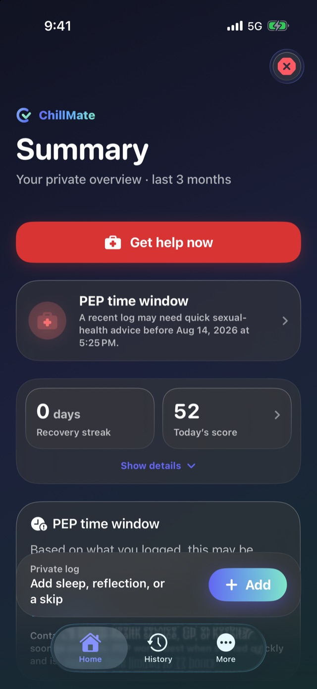

Nederlands
Een rustige, privéplek om voor jezelf te zorgen.
Geniet van je nacht, en word wakker met het gevoel dat je goed voor jezelf gezorgd hebt. ChillMate houdt bij wat je nam en hoe je je voelde, vertelt wat slecht samengaat, en laat een vriend rustig weten dat je thuis bent. Allemaal privé. Allemaal gratis.
Hij staat nog niet in de App Store. Laat je mailadres achter, dan hoor je één keer van me, op de dag dat hij er is. Verder nooit iets.
Scroll
Voor wie het is
Gemaakt voor de nachten die andere apps overslaan
Chems, hookups, of allebei. ChillMate neemt je nacht zoals hij was. Uitleggen hoeft niet.
De app noemt een nacht een Chill. De jouwe is van jou, wat het ook werd.
- Een risicocheck die weet welke medicijnen je slikt, dus het antwoord past bij jou.
- Een check-intimer, zodat een vriend weet dat je thuis bent. Appen hoeft niet.
- Een aftelklok voor PEP, de medicijnen die je slikt na mogelijk contact met hiv. Die werken alleen als je snel begint, dus het aftellen start meteen.
- Testherinneringen die op tijd komen en op je vergrendelscherm nooit zeggen waarvoor.
Een kijkje binnen
Vijf schermen, en wat je aan elk hebt.
Hij schikt zichzelf
Wat je nodig hebt, staat al bovenaan
Leg een nacht vast en het beginscherm schikt zich eromheen. Hier ziet de app dat een gesprek over PEP zinvol kan zijn. Die aftelklok staat dus meteen bovenaan.
Eerlijke antwoorden

Wat bekend is, in gewone taal
Kies wat er speelt, ook je eigen medicijnen. Je krijgt te horen wat er over die mix bekend is, in woorden die je om vier uur ’s nachts nog snapt. De keuze blijft van jou.
Als het al zwaar is
Eén rustig ding tegelijk
Gedimd scherm, niets dat knippert, stap voor stap. Adem, loop de groundingstappen door, en bel iemand zodra je dat wilt.
Echte hulp, ook offline

Mensen, één tik verderop
Crisislijnen, seksuele gezondheid, drugsinformatie en LHBTIQ+ steun voor jouw land. De lijst staat op je telefoon, dus hij werkt ook zonder bereik.
Je gegevens, op één scherm
In de app, niet in de kleine lettertjes
Wat er op je telefoon staat, wat er in een back-up zou zitten, en wat ChillMate nooit verstuurt. Eén scherm laat het allemaal zien. Geen juridische tekst om door te ploegen.
Probeer het
Dit is de echte risicocheck.
Geen plaatje ervan. Dezelfde 30 combinaties en dezelfde woorden als in de app, hier draaiend. Je hoeft niets te installeren.
Kies wat er speelt
Wat je al slikt
Hoe kort op elkaar
De risicocheck noemt niets veilig. De samenvattingen ook niet. Nergens in de app krijg je te horen dat iets wel goed zit. Je krijgt wat er bekend is, in gewone taal, en jij beslist.
Standaard privé
Je telefoon, en nergens anders
Niets van wat je hier schrijft gaat ergens heen. Niet naar mij, niet naar een bedrijf, niet naar een adverteerder. Het blijft op je telefoon.
- Zet er Face ID of een pincode op. Alles op je telefoon is versleuteld, dus niemand anders leest het.
- Back-ups zijn optioneel en ook versleuteld, en ze gaan naar je eigen iCloud Drive.
- Meldingen kun je zo laten formuleren dat je vergrendelscherm niets prijsgeeft.
Waar je gegevens heen gaan
De details
Specificaties
| Vereist | iPhone met iOS 26 of nieuwer |
|---|---|
| Apple Watch | Eigen app, watchOS 26 of nieuwer |
| Prijs | Gratis. Geen betaalde versie, geen abonnement, geen advertenties. |
| Account | Geen. Er valt niets aan te melden. |
| Verzamelde gegevens | Geen |
| Talen | English, Nederlands, Deutsch, Français, Español |
| Hulpdiensten | 10 regio’s, op je telefoon, werkt offline |
| Gecheckte combinaties | 30 bekende interacties, op je telefoon |
| Geschreven samenvattingen | Op je telefoon, Apple Foundation Models |
| Synchronisatie en back-up | Optioneel, versleuteld, je eigen iCloud |
| Vergrendeling | Face ID, of een pincode beschermd met 200.000 PBKDF2-rondes |
| Broncode | Open, MIT-licentie |
| Versie | 4.2.1 (build 422) |
Nog één ding
Hij is gratis, en dat blijft zo.
Laat je mailadres achter, dan hoor je één keer van me: op de dag dat ChillMate in de App Store staat. Daarna verwijder ik je adres. Ondertussen werkt de risicocheck hierboven nu al, en werkt elk nummer op de hulppagina ook zonder bereik.
ChillMate helpt je nadenken, vooruit plannen en goed voor jezelf zorgen. Hij vervangt geen arts, en hij bepaalt nooit of iets veilig is. Kan iemand in direct gevaar zijn? Bel dan je lokale alarmnummer.